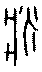

大壯卦 雷天大壯
大壯卦 雷天大壯
大壯，利貞。初九，壯于趾，征凶，有孚。九二，貞吉。九三，小人用壯，君子用罔。貞厲。羝羊觸藩，羸其角。九四，貞吉悔亡，藩決不羸，壯于大輿之輹。六五，喪羊于易，无悔。上六，羝羊觸藩，不能退，不能遂，无攸利，艱則吉。
【卦名】
今本：大壯 帛書：泰壯/大莊 秦簡：大壯 清華簡：大 海昏：大壯
陽氣強盛，造成傷害。
《爾雅》：壯，大也，「疾，齊，壯也」，「八月為壯」。
壯為強壯、壯大，另也有傷、疾的意思。帛書作泰壯，清華簡作大。為藏或贓、贜的古字，同匨、臧。臧者善也，也可與壯互通。
《說文》士部：「壯，大也，从士爿聲。」段玉裁：「《方言》曰：凡人之大謂之奘，或謂之壯。尋《說文》之例，當云大士也，故下云从士，此蓋淺人刪士字。」按：爿音牆。
依段注，壯為「大士」的意思。《禮記·曲禮》：「二十曰弱冠，三十曰壯，有室。」人三十歲為壯年，而能有家室，孔子說：「三十而立。」孔穎達疏：「三十而立，血氣已定，故曰壯也。」壯字從爿從士，士的原始字義為武士或雄性，爿字有依靠之義，那麼壯或許用以表達可為依靠的武士或雄性，即段玉裁所說的「大士」，符合強壯、盛大之義。
甲骨文中似乎無壯字，但有爿字，爿字《說文》未收錄，徐灝《說文解字注箋》：「《說文》無爿字，而壯斨戕牆等篆皆用為聲，蓋偶佚之。戴氏侗曰：唐本《說文》有爿部，張參《五經文字》亦有之。」甲骨文的爿字學者看法頗分歧，有人認為可能是牀的本字，有人認為是將或醬，有人認為同片或版，也有人認為是疒。
清朝鈕樹玉《說文解字校錄》：「鍇曰：爿則之省，象人衺身有所倚箸。至於牆壯戕狀之屬竝當从牀省聲。」「徐說亦未確。爿即疒字字形所變，後人誤分耳。《玉篇》疒又音牀。《廣韻》疒收陽韻，又收麥韻，聲之轉也。俗書牆為廧，牀為床，竝从疒而省也。《釋言》疾訓壯，蓋取聲相近，後人不審古音，遂仞為兩字。」 鈕樹玉評徐鍇看法其實有些誤會，因為即疒，因此徐鍇看法其實和他一樣，爿即疒（）的簡化。《說文》：「疒，倚也，人有疾病，象倚箸之形。」疒字甲骨文從爿從人，學者通解認為是疾的本字之一，並依此推論爿字如《說文》疒字，有倚靠之義。
鈕玉樹還從爿為疒推理說疾即壯。《爾雅》：「疾齊壯也。」郭璞注：「壯，壯事謂速也。」刑昺疏：「急速齊整皆於事敏速彊壯也。」疒與壯兩字古文應該形近或聲近而可互訓，或許可能因與疾互通而又有傷義，但據郭璞注，《爾雅》疾齊取其速義。
「疾」字在甲骨文其實有兩個字源，其中一個字源疒，從爿從人，畫的是一個人躺在牀上，代表的是疾病。有時人身上會多一些點點，可能象徵人受傷而流血，以爿為依靠。另一字源畫的是人的旁邊有一箭 ，以飛箭來表達急速、飛速之義。現在的疾字同時兼有這兩個意思，古文字學家亦認為這是由兩個不同字演變合一而成。若從甲骨文來看，疾、疒、壯可能形近而可互訓。
，以飛箭來表達急速、飛速之義。現在的疾字同時兼有這兩個意思，古文字學家亦認為這是由兩個不同字演變合一而成。若從甲骨文來看，疾、疒、壯可能形近而可互訓。
壯也有傷的意思。《方言》：「凡此木刺人，北燕朝鮮之間謂之茦，或謂之壯。」郭璞注：「今淮南人亦呼壯。壯，傷也。」馬融與虞翻都以傷來註解大壯的壯。虞翻：「壯，傷也。大謂四，失位為陰所乘。兌為毀折傷。」
【卦義】
大壯卦卦義有三種不同面向的意義：一是陽壯，陽氣壯盛，二是大撞，嚴重衝突，三是大傷，嚴重的傷害。
易經以陽為大，凡是卦名中有大者，都一定有乾的卦象，如大過、大畜、泰（泰同太、大），大就是指乾陽。因此大壯也可理解為「陽壯」，陽氣壯盛。陽氣過於強壯並非好事，容易因此產生衝撞，進一步造成無謂的傷害，所以《象傳》說「君子以非禮弗履」，此告戒君子當以禮節來約束，避免衝突犯錯。而《雜卦傳》說「大壯則止」，勸人要懂得停看聽。
大壯為陽氣壯盛，陽氣壯盛有時是好事，但卦象震在外有躁行過動之傾向，所以很容易產生衝突、衝撞，進而造成傷害。爻辭講的就是羝羊衝撞圍籬並傷人的故事，羊者陽也，此象徵陽氣過壯不受約束則將傷人。虞翻與馬融直接以「傷」解釋大壯，今人高亨則認為壯假借為戕，戕為傷的意思。郭璞：「淮南呼壯為傷。」因此得大壯卦應當避免過於衝動而造成傷害，若能多一點冷靜、三思而後行，事緩則圓。
《繫辭傳》：「上古穴居而野處，後世聖人易之以宮室。上棟下宇，以待風雨，蓋取諸大壯。」古代大壯卦象是取自屋宇的棟樑，因為棟樑要夠強壯屋子才會穩固，這也是大壯之用。
卦象上雷震，下乾天為剛健。雷在天上，剛健而震動之象。震為壯，乾為大；震動在外，有乾陽在內提供源源不絕之能量，因此為大壯。大象兩陰凌駕四陽，像放大版的兌卦，兌為損傷，因此為大傷之象。
《爾雅》：「八月為壯。」傳統以農曆八月為壯月。但就卦氣理論來看，大壯卦為二月之卦。卦氣發展到一月泰卦時陰陽達到最佳的調和狀態，大人歸來，君子主政。二月再增長一陽就是陽氣壯盛，也就是大壯。
卦序上大壯是繼遯卦而來，並與遯為相綜的一對對卦。《序卦》：「物不可以終遯，故受之以大壯。」遯卦為陰氣增長開始進逼陽氣，小人道長，君子道消而隱退的時候。大壯則是陽氣壯盛，再往下一步就是夬卦，也就是五陽要解決一陰。遯與大壯兩卦也可以視為對僵化社會的一種反動，恒卦象徵穩定，但恐有僵化之失，遯卦為逃離的解決方法，大壯則是衝撞（大撞）的解決方式。《雜卦》：「大壯則止。」此告戒君子，凡事適可而止，過猶不及。
得大壯卦，如果所問的事情屬一個人單獨、且依靠蠻幹就可完成者，那麼有足夠的能力與精力去達成目標，是比較偏向為吉的。若是要與人協調合作者，那麼這是一個缺少和協與手段的一卦，甚至可能會有人事的嚴重衝突，較為偏凶。不過這種衝突比較屬於義理、理念之衝突，有別於夬卦陰險的權力鬥爭。
大壯之時，吉道如卦辭所言，利貞，宜於貞定。凡事以能安定，冷靜為吉。《象傳》說的「非禮弗履」。王弼：「未有違謙越禮能全其壯者也，故陽爻皆以處陰位為美。用壯處謙，壯乃全也；用壯處壯，則觸藩矣。」六爻的判斷上，陽壯若能有陰柔的調和，那麼就可偏吉，因此以陰位較吉。如九二、九四皆言「貞吉」，而上六則是「艱則吉」。反觀初九則說「征凶」，九三「貞厲」。
《論語‧季氏》孔子談君子三戒：「及其壯也，血氣方剛，戒之在鬥。」六爻大致以好觸的公羊為主角，此有如人之壯年，血氣方剛好鬥而當戒慎之。
大壯，利貞。
《彖》曰：大壯，大者壯也，剛以動，故壯。大壯利貞，大者正也。正大而天地之情可見矣。
《象》曰：雷在天上，大壯，君子以非禮弗履。
陽氣壯盛，宜於貞定。
大壯有三層意義。一是陽氣旺盛（陽為大），二是「大撞」，如果不夠冷靜、遵循禮儀，則可能演變為「大撞」，就是衝突、衝撞。因此《象傳》說「君子以非禮弗履」。三是「大傷」，衝撞結果就是造成嚴重的傷害。
壯通解為壯盛、壯大。馬融虞翻都解釋為傷。
- 鄭玄：壯，氣力浸強之名。
- 王肅：壯，盛也。
- 虞翻：陽息泰也。壯，傷也。大謂四，失位為陰所乘。兌為毀折傷，與五易位乃得正，故利貞也。
- 荀爽：乾剛震動，陽從下升，陽氣大動，故壯也。
- 侯果：此卦本坤。陰柔消弱，剛大長壯，故曰大壯也。
- 孔穎達：壯者，強盛之名。以陽稱大，陽長既多，是大者盛壯，故曰大壯。利貞者，卦德也。群陽盛長，小道將滅，大者獲正，故曰利貞也。
初九，壯于趾，征凶，有孚。
《象》曰：壯于趾，其孚窮也。
壯大在腳趾，出征一定是凶。
初位為趾，故曰趾。趾有行動之初的意思，也隱喻這是末稍、卑微、無足輕重、妄動。壯于趾比喻這是空有樣子的壯盛，以此出征，必凶無疑。其初難知，初爻為情勢不明難知之時，此時用壯為躁動而無謀，因此為凶。
壯也是傷，壯於趾為傷到腳趾。腳趾又可比喻行動的開始，行動的開始就受傷。
征為出征。有孚，有信驗，表示事情一定會發生。征凶有孚，出征為凶，此事有信驗，一定會發生，不用懷疑。《象傳》說「其孚窮也」，解釋「有孚」：信驗的是什麼？出征將會窮困。
王弼：在下而壯，故曰壯于趾也。居下而用剛壯，以斯而進，窮凶可必也，故曰征凶有孚。
九二，貞吉。
《象》曰：九二貞吉，以中也。
貞定為吉。大壯的吉道在於中庸、冷靜。九二有中庸之道，中立而不偏頗，因此而吉。
王弼：居得中位，以陽居陰，履謙不亢，是以貞吉。
九三，小人用壯，君子用罔。貞厲。羝羊觸藩，羸其角。
《象》曰：小人用壯，君子罔也。
《易之義》：子曰：萬物之義，不剛則不能僮，不僮則无功，恒僮而弗中則 ［亡 ，此剛］之失也。不柔則不靜，不靜則不安，久靜不僮則沈，此柔之失也。是故鍵之炕龍、壯之觸蕃、句之离角、鼎之折足、酆之虛盈，五繇者，剛之失也，僮而不能靜者也。
小人用強大的蠻力控制失控的羝羊，君子則知道要用網子。堅定則有危險。公羊頂撞圍籬，那麼就要設法綁住羊角。
大壯卦以羝羊來隱喻過盛的陽氣，談的是如何控制羝羊，如人控制過盛之血氣。小人與君子對於如何處理過盛的血氣顯然有所不同。小人以壯御壯，意氣用事而好勇鬥狠，有如羝羊以角觸藩。君子則能深思熟慮，以柔克剛，以網羅控制羝羊。罔字一語雙關，既是網羅，又通無，用罔頗有以空虛柔弱為用之義。
如果堅定固執於壯，則會艱苦或危險。就如蠻幹的公羊，仗著自己有堅硬的羊角而頂撞圍籬，只知進不知退，羊角因此被困而進退不得。
王弼：「故小人用之以為壯，君子用之以為羅己者也。」意思為小人以壯為壯而用壯，君子以壯為自身之網羅而不用。
帛書《易之義》引孔子：「萬物之義，不剛則不能僮，不僮則无功，恒僮而弗中則亡 ，此剛之失也。」「剛之失也，僮而不能靜者也。」僮即動。此爻「恒動而弗中」，「動而不能靜」，都有過剛之失，因此以能冷靜為吉。
- 京房：壯一也，小人用之，君子有而不用。
- 孔穎達：九三處乾之上，是健之極也。又以陽居陽，是健而不謙也。健而不謙，必用其壯也。小人當此，不知恐懼，即用以為壯盛，故曰小人用壯。君子當此即慮危難，用之為羅罔於己，故曰君子用罔。以壯為正，其正必危，故云貞厲也。以此為正，狀似羝羊觸藩也。必拘羸其角矣。
- 朱熹：小人以壯敗，君子以罔困。
【字義】
罔：《釋文》：「罔，羅也。馬、王肅云：罔，无也。」罔有兩種解釋，一是網，二是亡，通無。罔是由网字所演變而來，甲骨文的网即今之網。但罔字後來用作亡，通无，因此演化出加糸字旁的網作區別。《釋文》說的「罔羅也」即取網的意思。王弼取網羅義：「故小人用之以為壯，君子用之以為羅己者也。」孔穎達：「罔，羅罔也。」虞翻：「謂二已變離，離為罔，三乘二，故君子用罔。」揣測虞翻意思，「離為罔」應是指網的意思。《繫辭傳》：「作結繩而為網罟，以佃以漁，蓋取諸離。」離即網罟。「上古結繩而治」虞翻注：「離為罔罟。」宋明儒普遍將罔解釋作「無」，用罔，意謂無視於事情的發生，所以罔又通蔑，即蔑視的意思。如程頤：「罔，无也。猶云蔑也，以其至剛蔑視於事而無所忌憚也。」朱熹：「罔，无也。視有如无，君子之過於勇者也。」
羝：音低，公羊。《說文》：「牡羊也。」牡羊即公羊。公羊個性暴燥易怒，動輒以角抵觸。藩，音凡，藩籬，籬笆。羝羊觸藩，暴怒的公羊以角衝撞抵觸籬笆。
羸其角：羸，音雷，羸應作纍或縲，原本是繩子，引申為綁起來，或用繩子纏繞。王肅作縲，音螺，鄭玄虞翻作纍，張作蔂，馬融：「羸，大索也。」孔穎達：「羸，拘累纏繞也。」羸其角意思為，因為公羊亂撞籬笆，所以從羊角將牠綁住，或者羊角為圍籬所纏繞。至程頤、朱熹開始，將羸解釋為困。此為引申義。程頤：「喜用壯如此，必羸困其角矣。」朱熹：「羸，困也。」來知德解釋為弱。羸其角，衰弱公羊的角，意思為角被籬笆卡住而使羊的角無法發揮力量。
九四，貞吉悔亡。藩決不羸，壯于大輿之輹。
《象》曰：藩決不羸，尚往也。
貞定而吉之後得以不再後悔。撞倒圍籬，無法綁住羊的角，公羊撞壞了大車的車體。
羝羊完全失控，有如人之血氣爆發，則只有破壞，讓事情一團亂。若能夠冷靜，則能夠變吉，不用後悔。
「藩決不羸，壯于大輿之輹」另一最常見的解釋意思與此見解完全相反：圍籬已經倒下，前面的險阻已經排除，氣勢沒有被削弱，車子的輪輹也經過加強非常堅固，能夠走更長遠的路。這符合《象傳》「藩決不羸，尚往也」的解釋。此以壯為壯大。但此解釋文義邏輯並不通順。
但不管那一個解釋，都是冷靜、鎮定為吉，衝動則凶。九四已到外卦，羊既已在外，所以是「藩決」之象，也就是圍籬已倒下。既然講的是羝羊觸藩，後文又有喪羊之文，那麼這裡的藩決當指羝羊將圍籬壯破，顯然羝羊已不受控制。羝羊不受控制而說大車的輪輹壯盛，有利於行而尚往，於理不合。
【字義】
藩決不羸：藩，圍籬，籬笆。羸作「纍」，繫、綁住的意思。藩決不羸，籬笆倒下，羊沒有綁好，所以到處衝撞。羸或解釋為受困或衰弱。不羸，不再受困或沒有衰弱，就是強盛依然的意思。藩決不羸，公羊把圍籬撞倒，因此氣勢如虹，完全不再受困，氣勢沒有被削弱，因此繼續到處亂撞。
壯于大輿之輹：依《象傳》，壯通解為壯大。壯于大輿之輹為大車車軸強化而能遠行。如王弼：「壯于大輿之輹，无有能說其輹者，可以往也。」程頤：「輹，輪之要處也。車之敗，常在折輹，輹壯則車強矣。云壯于輹，謂壯於進也，輹與輻同。」依虞翻，則應當解釋為傷於大車之腹，即車體被暴走的公羊所撞壞。虞翻：「坤為大車、為腹。四之五折坤，故壯于大車之腹。」依文義以虞翻解釋為佳。輹，固定車輪軸的皮革繩。帛書作緮，《周易集解》引虞翻作腹，大畜九二輿說輹，小畜九三輿說輻。《說文》：「輹，車軸縛也，从車复聲，《易》曰：輿脫輹。」段注：「謂以革若絲之類纏束於軸，以固軸也。縛者束也。」「《周易》小畜九三、大畜九二文也。馬云：車下縛也，與許合，其非轐明矣。或作腹者叚借字，或作輻者譌字。」
六五，喪羊于易，无悔。
《象》曰：喪羊于易，位不當也。
在有易這個地方損失了羊群，無所後悔。
「喪羊於易」依朱熹解釋為在田邊讓羊走失了。依王弼、程頤，為喪失其剛壯的陽氣而變為和易，因此而無悔。喪羊比喻人不再氣盛。大壯卦中以「公羊」比喻「壯」，因羊秉性陽剛而愛「撞」，特別是公羊。因此喪羊，也就是「喪陽」。大壯卦之所以為「大壯」，是就下面四個陽爻而言，至六五，陽爻失，所以說「喪羊」。易，也有平易，心境坦然的意思。此當作「有易」，方國名。
根據顧頡剛《周易卦爻辭中的故事》考證，「喪羊於易」與旅卦上九「喪牛于易，凶」，講的是殷人先祖王亥客居於「有易」國的故事。王亥在有易國以畜牧牛羊為營生，曾有過優渥的生活，後為有易國君所殺並取其僕人與牛，家破人亡。而在被殺之前還曾有被強取其羊的事，但安然渡過。另還發現《繫辭》所謂的「服牛乘馬，引重致遠」，是王亥發明的，換句話說，他不但是畜牧業的先祖，還是馴化家畜為人所利用的發明者。王亥可以說是消失在歷史洪流中的一個偉人，直到現代甲骨文的研究才被學者所重新發現，從卜辭中還可看出，他是殷商所有先祖的祭祀中最隆重的。
【字義】
喪羊于易：喪羊，帛書作亡羊。易，傳統有三種解釋，一是作埸，通場或畔，田邊的意思。《釋文》：「陸作場，謂壃場也。 」朱熹《正義》：「易，容易之易。言忽然不覺其亡也。或作疆埸之埸，亦通。《漢．食貨志》埸作易。」《朱子語類》：「喪羊于易，不若作疆埸之易。」俞琰：「易，王肅：音亦，畔也，與埸通。陸績亦以為疆埸之埸。」《康熙字典》引《說文》：「埸，田畔也。大界曰疆，小界曰埸。」二是取平易、和易之義。王弼：「羊，壯也。必喪其羊，失其所居也。能喪壯于易，不于險難，故得无悔。」程頤：「喪其壯於和易也，如此則可以无悔。五以位言則正，以德言則中，故能用和易之道，使群陽雖壯无所用也。」三是以易為輕易、疏忽，因為疏忽而致羊丟失。四，交易。鄭玄：「易謂佼易也。」《說文》：「佼，交也。」當代學者顧頡剛則以易為上古的小方國「有易」，並受到當代許多學者的支持。
上六，羝羊觸藩，不能退、不能遂。无攸利，艱則吉。
《象》曰：不能退，不能遂，不詳也。艱則吉，咎不長也。
公羊用羊角頂撞籬笆，羊角卡住，不能進也不能退。沒有任何好處，艱苦則吉。
此以公羊比喻衝撞反而讓事情陷入進退兩難的僵局，沒有任何好處。若反過來，能夠冷靜堅定，吃苦耐勞則吉。
就全卦卦象來看，上六的陰爻兩斷像公羊的一對角在頂撞圍籬，因此上六雖不是陽，卻說「羝羊觸藩」。
上六以陰柔的才性而居大壯的極高之處，才柔而無力以進，位極高而無路可退。柔而當位，若能艱貞則可為吉。
朱熹《正義》：壯終動極，故觸藩而不能退。然其質本柔，故又不能遂其進也。其象如此，其占可知。然猶幸其不剛，故能艱以處，則尚可以得吉也。
【字義】
不詳也：有二種解釋。一是未能詳審。公羊氣盛未能詳審情勢而亂撞。二是不祥。《釋文》：「不詳，詳審也，鄭王肅作祥，善也。」
【彖傳注】
大壯，大者壯也，剛以動，故壯。大壯利貞，大者正也。正大而天地之情可見矣。
大壯，大者壯也：解釋大壯義。陽稱大。大壯卦為泰卦陽氣增長而來，因此為陽氣壯盛。
剛以動，故壯：以上下二體卦德解釋卦義。乾剛健，震為動，剛以動之象，所以稱壯。
大壯利貞，大者正也：解釋經文利貞，大者宜於正固。
正大而天地之情可見矣：「正大」解釋「大壯利貞」，正而能夠大，則天地之情可見。
大壯卦由夬卦和謙卦旁通而來。夬卦九五往謙之二，夬體成壯，謙體成升。因此理論上主爻為六五。若就消息卦的觀點來看，則大壯為泰卦陽氣增長而來，那麼主爻應當是九四。與大壯旁通的觀卦，《彖傳》說「中正以觀天下」可推得九五為主爻。但若就消息卦觀點來看，觀卦主爻為六四，從否卦陽消而來。如果九五為觀卦成卦主爻，那麼推理觀卦當從剝卦與履卦旁通而來，履二之剝五，履卦變成无妄，剝卦成觀。